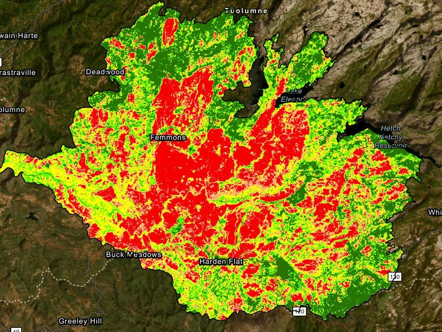
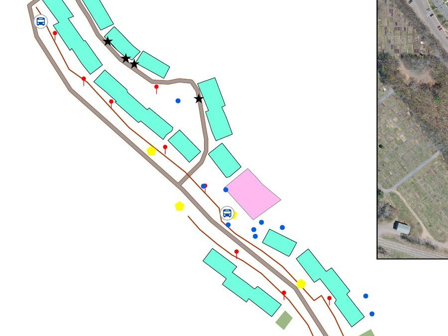
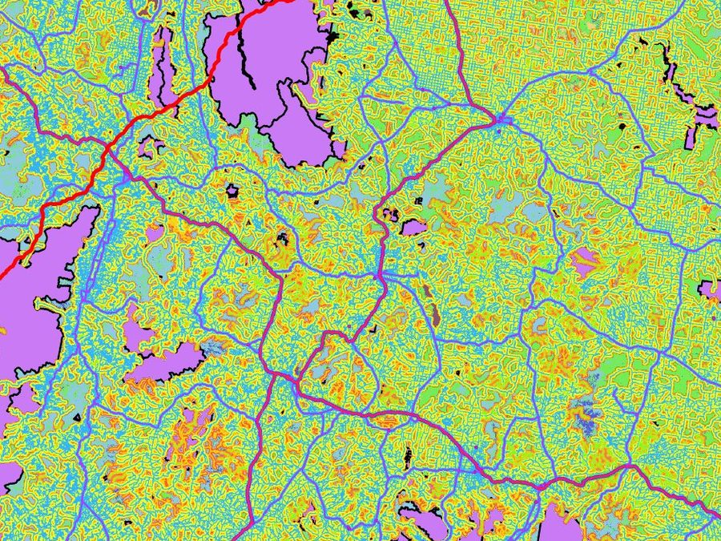

Mapping land and measuring change with satellite imagery and spatial analysis
Read the land.
GIS & remote sensing analyst
Turning satellite imagery and field data into maps people can act on.
Three years of GIS work across railway infrastructure, mining environmental compliance, land-use mapping and wildlife research in Zimbabwe and the United States. Open to GIS and remote sensing roles.
- Education
- MS Geographic Information Science, Michigan Technological University, April 2027
- Currently
- Research Assistant, Isle Royale Wolf–Moose Project
- Based in
- Houghton, Michigan
Featured work
Selected projects
-

Remote sensing · Fire ecology
Rim Fire burn severity
Burn severity classified with dNBR in Google Earth Engine, then recovery tracked at 1, 3 and 5 years.
-

Field GIS · Asset management
Campus asset management
A geodatabase of campus infrastructure collected with ArcGIS Field Maps and checked against 3-inch drone imagery.
-

Spatial ecology · Least-cost modelling
Grizzly bear corridors
Least-cost movement corridors from Yellowstone to Banff across a land-cover cost surface.
Experience
Where I’ve applied GIS
Michigan Tech · 2025 – present
Wildlife research
Maintain a geodatabase of 5,000+ Isle Royale moose records and analyze where remains are found relative to the shoreline.
ZimGeo · 2024 – 2025
Land-use change
Georeferenced historical aerial photographs and processed Landsat and Sentinel-2 imagery to map agricultural and mining-related change.
Glenrise · 2022
Mine safety risk zones
Mapped 125 mining incidents with buffer and kernel density analysis to identify operational risk zones.
National Railways of Zimbabwe · 2018 – 2019
Railway infrastructure
Digitized 300 km of railway and ran hotspot analysis on derailment locations to target maintenance.
Community
Memberships & affiliations
October 2026
GIS Student Volunteer · GIS-Pro 2026
Supported workshop delivery, hands-on activities and certification for the Cartography and Map Design Boot Camp in Milwaukee, Wisconsin.
April 2026 – present
Secretary · African Student Organization
Michigan Technological University. Helps plan cultural events and community outreach programs on campus.
Member · April 2026 – present
Geospatial Professional Network
Member · April 2026 – present
American Association of Geographers
Toolkit
Tools and methods
- ArcGIS Pro
- QGIS
- Google Earth Engine
- Python
- R
- ArcGIS Field Maps
- Geodatabases
- Landsat
- Sentinel-2
- MODIS
- SAR
- dNBR / NBR
- NDVI · EVI · MNDWI
- Kernel density & hotspot analysis
- Kriging
- Least-cost path
- Bayesian habitat modelling